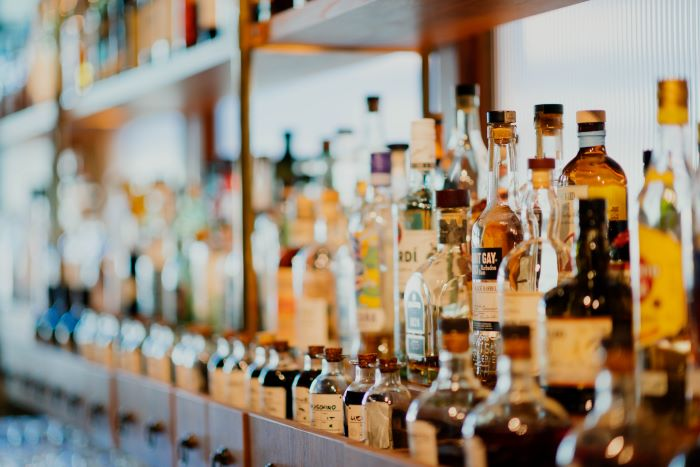

El Jägermeister (en alemán, “Maestro Cazador”), se ha convertido en el licor más exportado de Alemania y en la octava marca de bebidas premium más vendida en todo el mundo.

BIENVENIDOS A DON BOSCO BEBIDAS
En Don Bosco Bebidas, nos enorgullece ofrecerte una amplia selección de bebidas de alta calidad que deleitarán tus sentidos y elevarán tus momentos especiales. Ya sea que estés buscando una botella de whisky exclusivo, un destilado artesanal o un exquisito vino, aquí encontrarás una variedad de marcas reconocidas y auténticas para satisfacer tus gustos más exigentes.